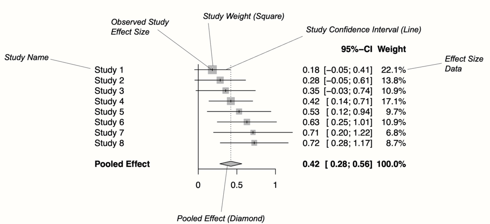

森林图

在 前面的章节中，我们学习了如何在 R 中合并效应量，以及如何评估 meta 分析中的异质性。现在我们来到了 meta 分析中稍微令人愉快的部分，在这里我们将可视化我们在前面步骤中获得的结果。
可视化 meta 分析最常见的方法是使用森林图。这种图以图形方式显示了每个研究的观察效应、置信区间，通常还包括权重。它们还显示了我们在 meta 分析中计算出的合并效应。总的来说，这使其他人可以快速检查纳入研究的精度和分布，以及合并效应与观察效应大小的关系。
{meta} 包有一个内置函数，可以非常容易地直接在 R 中生成美观的森林图。该函数具有广泛的功能，并允许根据需要更改图的外观。本章将主要关注此森林图函数以及如何在实践中使用它。此外，我们还将简要讨论另一种可视化 meta 分析结果的方法。
什么是森林图？
图 @ref(fig:forest) 显示了森林图的主要组成部分。在左侧，森林图显示了 meta 分析中包含的每个研究的名称。对于每个研究，都提供了效应量的图形表示，通常在图的中心。此可视化在 x 轴上显示研究的点估计。该点估计由一条线补充，该线表示为观察到的效应量计算出的置信区间的范围。通常，点估计被一个正方形包围。该正方形的大小由效应量的权重（第 @ref(fem) 章）决定：权重较大的研究会得到较大的正方形，而权重较低的研究会得到较小的正方形。
按照惯例，森林图还应包含用于执行 meta 分析的效应量数据。这为其他人提供了复制我们结果所需的数据。
在图的底部，一个菱形表示平均效应。菱形的长度象征着合并结果在 x 轴上的置信区间。通常，森林图还包括一条垂直的参考线，指示 x 轴上等于没有效应的点。正如我们将在接下来的示例中看到的那样，可以通过显示异质性度量（例如 \(I^2\) 或 \(\tau^2\)）来增强森林图。
森林图中的效应量和置信区间通常以线性刻度显示。然而，当汇总指标是一个比率（例如优势比或风险比）时，通常在 x 轴上使用对数刻度。这意味着 1 附近的值比远低于或高于 1 的值更接近。
这对于比率来说是有意义的，因为这些效应量指标不能以“线性”方式解释（即 RR = 0.50 的“相反”是 2，而不是 1.5；请参阅第 @ref(ratios) 章）。此类效应量的参考线通常为 1，表示没有效应。
R 中的森林图
我们可以使用 meta::forest 函数为任何类型的 {meta} meta 分析对象（例如 metagen、metacont 或 metabin 的结果）生成森林图1。我们只需为 meta::forest 提供我们的 {meta} 对象，即可创建一个图。通常，这些森林图默认情况下看起来已经很不错了，但是该函数还有无数其他参数可以进一步调整外观。所有这些参数都在函数文档中进行了描述（可以通过运行 ?meta::forest 访问）。以下是更重要的参数的列表：
sortvar。meta 分析数据集中用于在森林图中对研究进行排序的变量。例如，如果我们想按效应量对结果进行排序，可以使用代码sortvar = TE。comb.fixed。逻辑值，指示是否应在图中包含固定效应模型估计值。comb.random。逻辑值，指示是否应在图中包含随机效应模型估计值。text.fixed。根据固定效应模型合并效应的标签。默认情况下，打印"Fixed effect model"。text.random。根据随机效应模型合并效应的标签。默认情况下，打印"Random effects model"。prediction。逻辑值，指示是否应将预测区间添加到图中。label.left和label.right。添加到森林图左侧和右侧的标签。这可以用于指定，例如，此侧的效应有利于治疗（例如，label.left = "Favors treatment"）。smlab。显示在图顶部的标签。这可以用于显示使用了哪种效应量指标。xlim。x 轴的限制，或字符“s”以生成对称森林图。当您的结果与零有很大偏差，或者您还想描绘异常值时，此参数尤其相关。例如，如果我们希望 x 轴的范围为 0 到 2，则代码为xlim = c(0,2)。ref。图中的参考线。根据我们使用的汇总指标，默认情况下，此值为 0 或 1。leftcols和rightcols。在这里，您可以指定应在森林图的左侧和右侧显示哪些变量。该函数默认使用一些内置元素。例如，"studlab"代表研究标签，"effect"代表观察到的效应量，effect.ci代表效应量及其置信区间。也可以添加用户定义的列，只要这些列包含在我们最初提供给 {meta} 函数的data.frame中。在这种情况下，我们只需要将列的名称添加为字符串即可。leftlabs和rightlabs。应用于森林图左侧和右侧显示的列的标签。print.I2和print.I2.ci。逻辑值，指示是否应打印 \(I^2\) 值及其置信区间。默认情况下，此值为TRUE。print.tau2和print.tau。逻辑值，指示是否应打印 \(\tau^2\) 和 \(\tau\) 值。默认情况下，打印 \(\tau^2\) 的值。col.square、col.diamond和col.predict。正方形、菱形和预测区间的颜色（例如，"blue"）。
现在是生成我们的第一个森林图的时候了。在此示例中，我们绘制了我们在前面的示例中也使用的 m.gen 对象。我们按效应量对森林图中的研究进行排序，添加预测区间，并在左侧添加用户定义的标签。meta::forest 函数默认打印 \(\tau^2\) 值，我们在这里不需要它，因此我们将 print.tau2 设置为 FALSE。
这是我们的代码最终的样子：
meta::forest(m.gen,
sortvar = TE,
prediction = TRUE,
print.tau2 = FALSE,
leftlabs = c("作者", "g", "SE"))meta::forest 为我们提供的图看起来已经相当不错了。我们还看到图中添加了一条细的黑线，表示我们合并效应周围的预测区间。
我们可以通过添加一列显示每个研究的偏倚风险来增强该图。我们用于生成 m.gen 的 ThirdWave 数据集包含一列名为 RiskOfBias 的列，其中存储了每个研究的偏倚风险评估。
当我们使用 metagen 计算 meta 分析（第 @ref(pre-calculated-es) 章）时，该函数会自动将此数据保存在 m.gen 中。因此，我们可以使用 leftcols 参数将该列添加到图中。这将导致以下代码：
meta::forest(m.gen,
sortvar = TE,
prediction = TRUE,
print.tau2 = FALSE,
leftcols = c("studlab", "TE", "seTE", "RiskOfBias"),
leftlabs = c("作者", "g", "SE", "偏倚风险"))我们看到，现在，每个研究的偏倚风险信息已添加到森林图中。
布局类型
meta::forest 函数有两种“预先打包”的布局，我们可以使用它们将我们的森林图引入特定格式，而无需指定大量参数。其中之一是 "JAMA" 布局，它为我们提供了一个符合美国医学会杂志指南的森林图。如果您想在医学期刊上发表您的 meta 分析，可以使用此布局。
meta::forest(m.gen, layout = "JAMA")另一种布局是 "RevMan5"，它生成的森林图类似于 Cochrane 的 Review Manager 5 生成的森林图。
meta::forest(m.gen, layout = "RevMan5")保存森林图
由 meta::forest 生成的森林图可以保存为 PDF、PNG 或可缩放矢量图形 (SVG) 文件。与其他通过基本 R 或 {ggplot2} 包生成的图不同，当我们将其另存为文件时，meta::forest 的输出不会自动重新缩放。这意味着森林图有时会在两个或四个侧面被截断，我们必须手动调整宽度和高度，以便所有内容都可见。
pdf、png 和 svg 函数可用于通过 R 代码保存图。我们必须从调用这些函数之一开始，该函数告诉 R 以下代码的输出应保存在文档中。然后，我们添加对 meta::forest 函数的调用。在最后一行，我们必须包含 dev.off()，它会将生成的输出保存到我们在上面指定的文件中。
所有这三个函数都需要我们指定 file 参数，该参数应包含文件的名称。然后，该文件会自动保存在工作目录中，并使用该名称。此外，我们可以使用 width 和 height 参数来控制图的大小，这在输出被截断时可能会有所帮助。
假设我们要将我们的初始森林图另存为“forestplot”，我们可以使用以下代码来生成 PDF、PNG 和 SVG 文件。
pdf(file = "forestplot.pdf", width = 8, height = 7)
meta::forest(m.gen,
sortvar = TE,
prediction = TRUE,
print.tau2 = FALSE,
leftlabs = c("作者", "g", "SE"))
dev.off()PNG
png(file = "forestplot.png", width = 2800, height = 2400, res = 300)
meta::forest(m.gen,
sortvar = TE,
prediction = TRUE,
print.tau2 = FALSE,
leftlabs = c("作者", "g", "SE"))
dev.off()SVG
svg(file = "forestplot.svg", width = 8, height = 7)
meta::forest(m.gen,
sortvar = TE,
prediction = TRUE,
print.tau2 = FALSE,
leftlabs = c("作者", "g", "SE"))
dev.off()织锦图
到目前为止，森林图是可视化 meta 分析的最常见方法。大多数已发表的 meta 分析都包含森林图，并且许多研究人员都了解如何解释它们。建议您也在您的 meta 分析报告中包含一个森林图，因为森林图提供了对您的发现的全面且易于理解的摘要。
但是，森林图并不是说明我们结果的唯一方法。例如，meta 分析也可以通过织锦图 [@rucker2020beyond] 可视化。森林图的一个缺点是，它们只能显示假设固定显着性阈值（通常为 \(p<\) 0.05）的置信区间。正是基于这些置信区间，研究人员才能确定效应是否显着。
近年来，围绕 \(p\) 值的使用一直存在争议 [@wellek2017critical]，并且有些人认为基于 \(p\) 值的假设检验导致了许多研究领域的“复制危机”[@nuzzo2014statistical]。
织锦图基于 \(p\) 值函数。已经提出了这样的 \(p\) 值函数，以防止我们在解释分析结果时仅仅依赖于 \(p\)<0.05 显着性阈值 [@infanger2019p]。
因此，除了仅计算 95% 置信区间之外，\(p\) 值函数还提供了一条连续曲线，该曲线显示了 \(p\) 的不同值的置信区间。在织锦图中，为每个研究以及平均效应绘制一条置信曲线。x 轴显示效应量指标，y 轴显示假设的 \(p\) 值。
可以通过 {meta} 中的 drapery 函数生成织锦图。与 meta::forest 一样，一旦我们为其提供 {meta} meta 分析对象，此函数就会自动生成图。还有一些其他参数，其中最重要的参数是：
type：定义要在 y 轴上绘制的值的类型。对于检验统计量，可以是"zvalue"（默认值），也可以是 \(p\) 值 ("pvalue")。study.results：逻辑值，指示是否应在图中包含每个研究的结果。如果FALSE，则仅打印汇总效应。labels：当我们把这个参数设置为"studlab"，研究标签将包含在图中。legend：逻辑值，指示是否应打印图例。pos.legend：图例的位置。可以是"bottomright"、"bottom"、"bottomleft"、"left"、"topleft"、"top"、"topright"、"right"或"center"。
让我们在一个示例中使用我们的 m.gen meta 分析对象来试用 drapery 函数。
drapery(m.gen,
labels = "studlab",
type = "pval",
legend = FALSE)生成的图包含每个效应量的 \(p\) 值曲线，所有曲线都呈倒 V 形。粗线表示根据随机效应模型的平均效应。我们在图中看到的阴影区域表示预测区间，该区间比合并效应的置信区间宽得多。
\(p\) 值函数的“峰值”表示我们的 meta 分析中效应量的确切值。当我们沿着 y 轴向下移动时，\(p\) 值变得更小，并且置信区间越来越宽，直到我们达到由虚线水平线指示的常规显着性阈值。
根据该图，我们看到我们可以非常确信合并效应量大于零，因为当 \(p\) 已经非常非常小（<0.01）时，粗线在 x 轴上达到零。
Rücker 等人 [-@rucker2020beyond] 建议织锦图应主要除了森林图之外使用。简单地用织锦图代替森林图可能不是一个好主意，因为后者不包含其他方可能需要重现我们的结果的许多效应量信息。
\[\tag*{$\blacksquare$}\]
问题与解答
总结
习惯上通过森林图可视化 meta 分析的结果。
森林图包含每个研究的效应量和置信区间的图形表示，并且还显示计算出的总体效应。此外，它们还包含用于合并的效应量数据。
也可以将其他类型的信息添加到森林图中，例如每个研究收到的质量评级。
森林图只能显示假设固定显着性阈值（通常为 \(p<\) 0.05）的结果。为了可视化结果如何随不同的显着性阈值变化，可以另外生成织锦图。
Footnotes
在本章中，我们在调用
forest函数时总是附加meta::。这不是绝对必要的，但在实践中可能有时有助于避免错误消息（以及相关的混淆），因为metafor包中还有另一个forest函数，我们在这里不介绍。↩︎